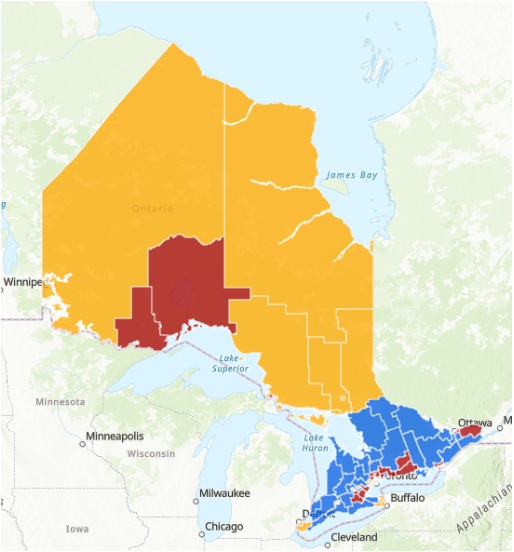
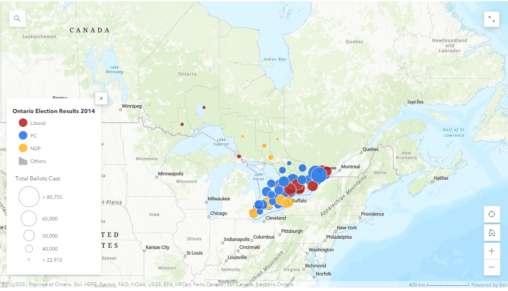
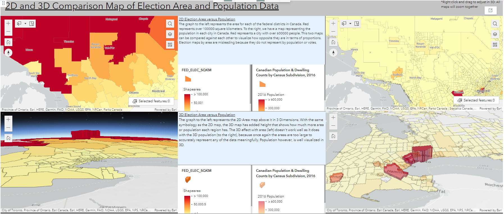

The Solution
What was Created
- Through colour and size 
- Map dashboard
- 3D height map
We looked at a badly represented map of Ontario's ballot system and looked at it through the area (Figure 1) we then added a new attribute in size by using the total ballots cast creating the map you see below. By looking at these maps we can see that when it is area-based it looks like the NDP (orange) easily won. In reality, the liberals won (red) and it was a lot closer race than it looked. the main votes were actually between the liberals and the conservatives (blue) where the NDP was only third. These areas that had the most population are much better represented in the map below by the areas with bigger circles.
We have created a dashboard that shows a map of votes through Canada in 2021. You can zoom in to see different areas and their votes. Additionally, we added two indicators to show the number of valid ballots in the area and the percentage of voter turnout in the area. we also added a list showing electoral district information, a pie graph of the number of votes each party received in each area, and a gauge representing. You are also able to select an electoral district and see all the data associated with it instead of using the zoom feature.

The third thing we created is a 3D height map based on population. on the left we have 2 maps that take in shape area and compare them to the right which is based on population. The population is shown by using a 3d height map making areas with a higher population taller than others.
